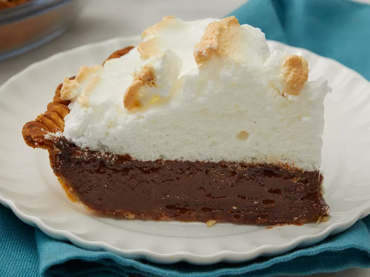

Chocolate Pie

Description
A traditional pie with a rich chocolate cream filling, topped with a light meringue.
This recipe is perfect for any special occasion.
Originally found on AllRecipes.
Ingredients
- 2 cups white sugar
- 5 tablespoons unsweetened cocoa powder
- 1/4 cup all-purpose flour
- 1 (12 fluid ounce) can evaporated milk
- 1 teaspoon vanilla extract
- 4 egg yolks
- 1/4 cup butter
- 1 (9 inch) unbaked pie shell
- 4 egg whites
- 1/4 cup white sugar
Directions
- Preheat the oven to 350 degrees F (175 degrees C).
- Whisk 2 cups sugar, cocoa, and flour together in a saucepan. Blend in evaporated milk and vanilla.
- Beat egg yolks and stir into chocolate filling.
- Add butter and heat, stirring constantly, until butter is just melted.
- Pour filling into unbaked pie shell.
- Bake in the preheated oven until pie is just set, about 35 to 40 minutes.
- Beat egg whites in a glass, metal, or ceramic bowl until foamy. Gradually add sugar, continuing to beat until stiff peaks form.
- Spread meringue over pie filling, covering completely.
- Return pie to oven and bake until meringue is lightly browned and golden, about 8 to 10 minutes.